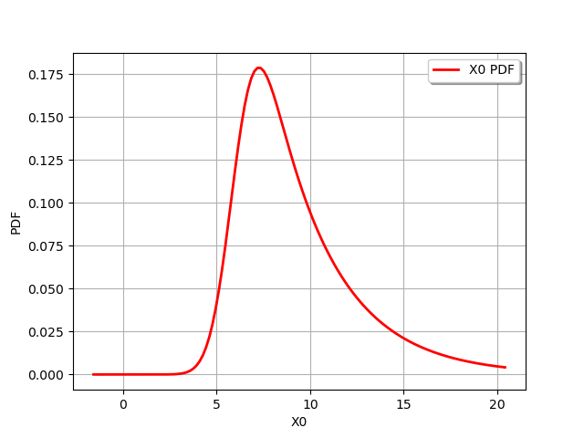
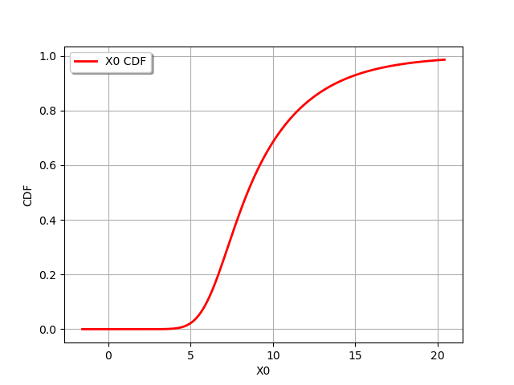
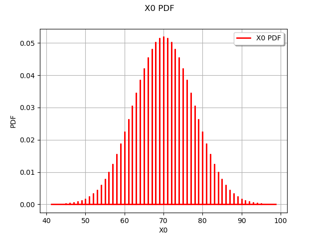
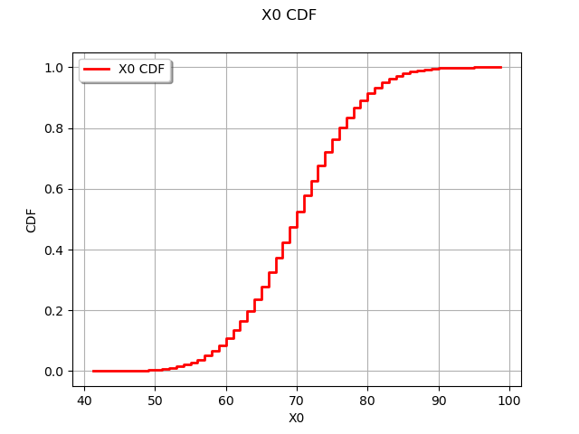

Note
Go to the end to download the full example code
Create a random mixture¶
import openturns as ot
import openturns.viewer as viewer
from matplotlib import pylab as plt
ot.Log.Show(ot.Log.NONE)
Create a mixture of distributions¶
We define an affine combination of input random variables.

where:

![X_2 \sim \mathcal{N}(\mu=4, \sigma=1)]()
This notion is different from the Mixture where the combination is made on the probability density functions and not on the univariate random variable.
We create the distributions associated to the input random variables :
X1 = ot.Exponential(1.5)
X2 = ot.Normal(4.0, 1.0)
We define an offset a0 :
a0 = 2.0
We create the weights :
weight = [5.0, 1.0]
We create the affine combination  :
:
distribution = ot.RandomMixture([X1, X2], weight, a0)
print(distribution)
RandomMixture(Normal(mu = 6, sigma = 1) + Exponential(lambda = 0.3, gamma = 0))
We get its mean :
mean = distribution.getMean()[0]
print("Mean : %.3f" % mean)
Mean : 9.333
its variance :
variance = distribution.getCovariance()[0, 0]
print("Variance : %.3f" % variance)
Variance : 12.111
the 90% quantile :
quantile = distribution.computeQuantile(0.9)[0]
print("0.9-quantile : %.3f" % quantile)
0.9-quantile : 13.825
We can get the probability of the random variable to exceed 10.0 :
prb = distribution.computeSurvivalFunction(10.0)
print("Probability : %.3f" % prb)
Probability : 0.315
We draw its PDF :
graph = distribution.drawPDF()
view = viewer.View(graph)

We draw its CDF :
graph = distribution.drawCDF()
view = viewer.View(graph)

Create a discrete mixture¶
In this paragraph we build the distribution of the value of the sum of 20 dice rolls.

where ![X_i \sim U(1,2,3,4,5,6)]()
We create the distribution associated to the dice roll :
X = ot.UserDefined([[i] for i in range(1, 7)])
Let’s roll the dice a few times !
sample = X.getSample(10)
print(sample)
[ v0 ]
0 : [ 1 ]
1 : [ 1 ]
2 : [ 6 ]
3 : [ 2 ]
4 : [ 4 ]
5 : [ 2 ]
6 : [ 3 ]
7 : [ 1 ]
8 : [ 3 ]
9 : [ 2 ]
N = 20
We create a collection of identically distributed Xi :
coll = [X] * N
We create the weights and an affine combination :
weight = [1.0] * N
distribution = ot.RandomMixture(coll, weight)
We compute the probability to exceed a sum of 100 after 20 dice rolls :
print("Probability : %.3g" % distribution.computeComplementaryCDF(100))
Probability : 1.58e-05
We draw its PDF :
graph = distribution.drawPDF()
view = viewer.View(graph)

and its CDF :
graph = distribution.drawCDF()
view = viewer.View(graph)

Display all figures
plt.show()